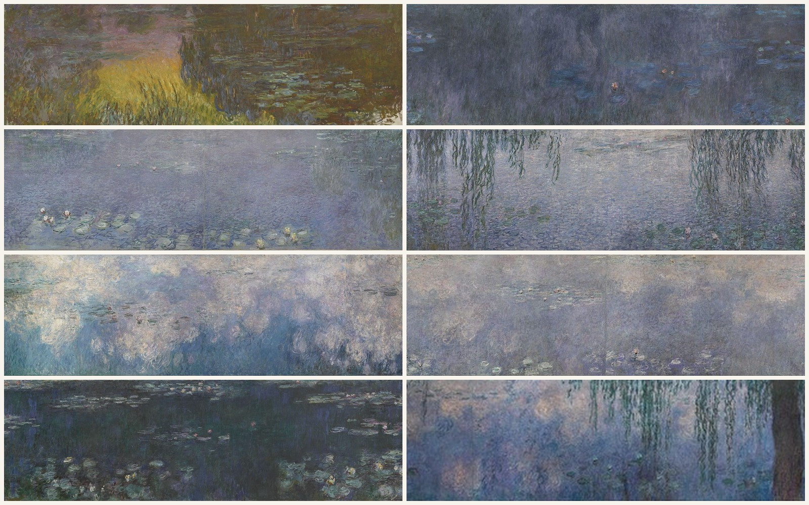

睡莲 Water Lilies
莫奈 · 1914–1926年 · 巴黎橘园美术馆
Claude Monet · 1914–26 · Musée de l'Orangerie, Paris
图片：Wikimedia Commons（Google Art Project 等），公有领域 / Image: Wikimedia Commons (Google Art Project and others), public domain

发现 · Discover
和平的礼物 A gift for peace
1918年11月11日停战后的第二天，莫奈写信给总理克列孟梭，把睡莲作为和平的象征献给法国。
The day after the Armistice of 11 November 1918, Monet wrote to the prime minister, Georges Clemenceau, offering the Water Lilies to France as a symbol of peace.
两个椭圆 Two ovals
莫奈亲自设计了这两个椭圆形展厅，画沿着弧形的墙面一圈排开。
Monet himself designed these two oval rooms, with the paintings following their curved walls.
没有岸的波浪 A wave without shore
他说，他想给观众“一个无边无际的整体、一片没有地平线也没有岸的波浪”的错觉。
He wanted to give viewers “the illusion of an endless whole, of a wave without horizon and without shore”.
91米 91 metres
8幅画，每幅高约2米，加起来总长超过91米。
Eight compositions, each about two metres high, stretch over 91 metres in total.
自然光 Natural light
光从磨砂玻璃天花板上洒下来，天气和时间不同，画也会跟着变。
Light falls from a frosted glass ceiling, so the paintings change with the weather and the time of day.
橙树的温室 A home for orange trees
橘园建于1852年，原本是给杜乐丽花园里的橙树过冬的温室。
The Orangerie was built in 1852 to shelter the orange trees of the Tuileries Garden in winter.
故事 · The story
ACT I 第一幕 · 三十年的睡莲 Thirty years of water lilies
从19世纪90年代末到1926年去世，莫奈用了将近三十年画他吉维尼花园里的睡莲池。这组巨大的画，是整个系列的顶峰。
From the late 1890s until his death in 1926, Monet spent nearly thirty years painting the water-lily pond in his garden at Giverny. These huge paintings are the summit of that cycle.
1914–1926年 · 巴黎橘园美术馆 / 1914–26 · Musée de l'Orangerie, Paris
ACT II 第二幕 · 停战后的第二天 The day after the Armistice
1918年11月12日，第一次世界大战停战后的第二天，莫奈写信给克列孟梭，要把这些画作为和平的象征献给国家。
On 12 November 1918, the day after the Armistice ended the First World War, Monet wrote to Clemenceau, offering these paintings to the nation as a symbol of peace.
1914–1926年 · 巴黎橘园美术馆 / 1914–26 · Musée de l'Orangerie, Paris
ACT III 第三幕 · 找回的光 The light restored
1927年，莫奈去世几个月后，展厅按他的设计开放。20世纪60年代的翻修挡住了自然光，直到2006年，展厅才恢复了莫奈想要的样子。
In 1927, a few months after Monet's death, the rooms opened according to his design. Renovations in the 1960s blocked out the natural light; only in 2006 were the rooms restored as Monet intended.
1914–1926年 · 巴黎橘园美术馆 / 1914–26 · Musée de l'Orangerie, Paris
一片没有地平线也没有岸的波浪。 A wave without horizon and without shore.
作品档案 · Artwork record
| 画家（生卒年） · Artist (dates) | 克劳德·莫奈（1840–1926） / Claude Monet (1840–1926) |
|---|---|
| 画名 · Title | 睡莲 / Water Lilies (Les Nymphéas) |
| 年份 · Date | 1914–1926年 / 1914–26 |
| 材质 · Medium | 布面油画，8幅组画，每幅高约2米，总长超过91米 / Oil on canvas, 8 compositions, each about 2 m high, over 91 m in total |
| 收藏地 · Collection | 巴黎橘园美术馆（1927年起展出） / Musée de l'Orangerie, Paris (on display since 1927) |
关于画家 · About the artist
克劳德·莫奈（1840–1926），法国印象派最重要的风景画家。他生于巴黎，在勒阿弗尔长大。普法战争期间（1870–71）曾移居伦敦。1883年起住在吉维尼，晚年专注于在不同光线下反复画同一主题，比如干草堆、鲁昂大教堂和他自己的花园。
Claude Monet (1840–1926) was the leading French Impressionist landscape painter. Born in Paris, he grew up in Le Havre and moved to London during the Franco-Prussian War (1870–71). From 1883 he lived in Giverny, where he painted series of a single subject under different light: haystacks, Rouen Cathedral and his own garden.